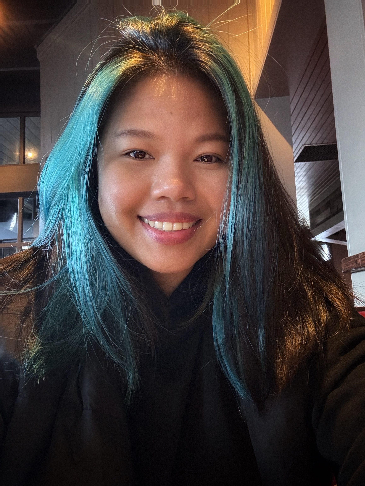

Hi, I’m Angelica. I have studied Photography, Computer Graphics Design, and now Webpage Design, which has helped me grow both my creative and technical skills. I enjoy working on photography, photo manipulation, and graphic design, and I’m always looking for ways to improve and learn more.
Outside of school, I love collecting succulents, especially lithops and haworthias.
I love how low-maintenance they are and how well they thrive in California’s weather,
making them easy to care for and appreciate for a long time.
I enjoy reading books when I have free time or listening to audiobooks while
working on other things.
I am currently reading The Secret Lives of Color by Kassia St. Clair, and
I especially enjoy learning the stories behind different colors.
My goal is not necessarily to chase one big dream, but rather to become truly skilled in what I do—especially in photography, photo manipulation, and graphic design. In the future, I also hope to expand my creativity by learning videography, video editing, and video animation.